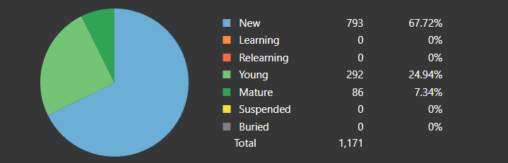

doc.jp Landing Page¶
Anki Stats¶
At some point, I do plan on scripting this out. But for now, I'll just update it daily.
Card Counts¶
Current Daily New Card Count
Will do 15 cards a day for now. Might do 20 in the future, but 15 seems like a sweet spot for me.
Tango N5 as of 10/19/2023¶
568 Vocabulary words known with 603 new cards remaining: On track to finish all new cards on November 29th with my current daily card amount. Then I'll start Tango N4.

Things I need to work on currently¶
- ている
- より
- のほうが
- か (or)
JFZ Book 3 Lesson Page Numbers (No Directory on kindle)¶
- Lesson 1:
- Starts: 9
- Workbook: 21
- Lesson 2:
- Starts: 49
- Workbook: 52
- Lesson 3:
- Starts: 53
- Workbook: 63
- Lesson 4:
- Starts: 75
- Workbook: 84
- Lesson 5:
- Starts: 97
- Workbook: 105
- Lesson 6:
- Starts: 117
- Workbook: 127
- Lesson 7:
- Starts: 141
- Workbook: 148
- Lesson 8:
- Starts: 159
- Workbook: 167
- Lesson 9:
- Starts: 177
- Workbook: 187
- Lesson 10:
- Starts: 201
- Workbook: 209
- Lesson 11:
- Starts: 219
- Workbook: 228
- Lesson 12:
- Starts: 239
- Workbook: 246
- Lesson 13:
- Starts: 257
- Workbook: 266